Temperature
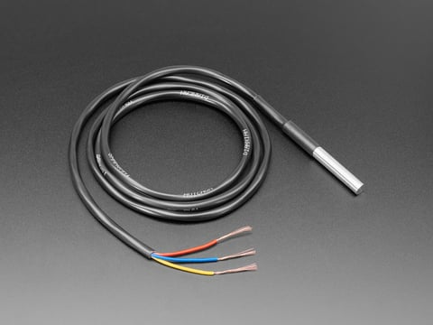
Waterproof DS18B20 digital temperature sensor
Provides environmental context for readings.

Project
Remote Early-Warning Water Quality Monitoring System
The Remote Water Quality Monitoring System is a Clemson Engineers for Developing Communities project I founded and led within the Technical Solutions program. The project was created to explore affordable, remote water-quality monitoring for communities with limited access to reliable testing infrastructure. Rather than certifying water as potable, the system is intended to act as an early-warning and decision-support tool that helps identify changes in water quality, possible treatment failure, contamination risk, or infrastructure degradation.
Over five semesters in CEDC, the project grew from a charter and literature review into a two-team engineering effort covering embedded sensor-node design, PCB breakout-board development, networking architecture, cloud/database planning, dashboard visualization, and technical handoff documentation. Although the project did not reach a fully validated field-deployable prototype before my graduation, the groundwork was completed for future CEDC members to continue into full sensor integration, calibration, enclosure design, PCB consolidation, and field testing.
As WQSP grew, the project was separated into two coordinated development tracks: the Remote Water Sensor Group and the Data Visualization Team. This split allowed the physical hardware work and the software/data interpretation work to progress in parallel while still supporting the same end goal: collecting water-quality measurements remotely and presenting them in a form that communities, facilitators, or project partners could understand and act on.
The physical system team focused on how readings would be captured in the field, while the visualization team focused on how those readings would be stored, processed, interpreted, and displayed. This structure made the project more realistic because the final system would need both reliable embedded hardware and a clear user-facing interface. It also allowed team members with different backgrounds in electrical engineering, computer engineering, and software development to contribute to the same system without forcing all work into one narrow task list.
This team focused on the physical sensor-node side of the project. Its work centered on the ESP32-based embedded system, the selected water-quality sensors, early PCB and breakout-board planning, power distribution, wiring simplification, enclosure direction, and future field-deployment constraints. The group's purpose was to define how the system would physically collect measurements such as ORP, pH, turbidity, TDS/conductivity, temperature, and flow rate.
This team focused on the software and communication side of the project. Since live sensor data was not yet available, the team used simulated water-quality data to begin developing the dashboard structure, visualization flow, warning logic, and data interpretation approach. The goal was to make sure that once physical readings were available, the system would already have a path for storing, displaying, and interpreting those readings.
The two tracks were designed to meet at the data pipeline. The Remote Water Sensor Group defined what data the system should collect and how the embedded node would collect it. The Data Visualization Team defined how that data could be uploaded, stored, interpreted, and displayed. Even though the final hardware-to-dashboard connection was not completed before my graduation, this two-team structure established a clear continuation path for future CEDC members: connecting validated sensor readings to the dashboard, refining threshold logic, and preparing the system for controlled testing.
The project was developed inside the CEDC lifecycle, which uses phased planning, documentation, and handoff to move projects from concept through eventual testing and deployment. WQSP advanced through chartering, literature review, project organization, architectural definition, dashboard prototyping, and PCB breakout work during my time at Clemson.
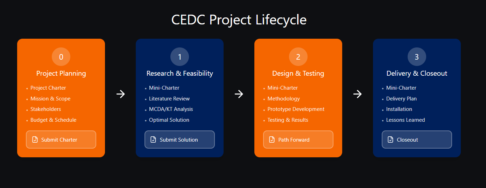
CEDC project lifecycle.
A mid-semester combined poster was prepared for the Greenville presentation to summarize the project direction at that stage.
Phase 0 established the mission, scope, stakeholders, constraints, risks, and development path for WQSP. This was the point where the need for a low-cost monitoring system was translated into a structured CEDC project with defined handoff expectations and phased technical growth.
The charter framed the system around early-warning monitoring rather than regulatory certification and set the foundation for later work in sensor selection, embedded architecture, and dashboard planning.
Primary contributors: Camren Khoury, Noah Friedman, Ata Ozer
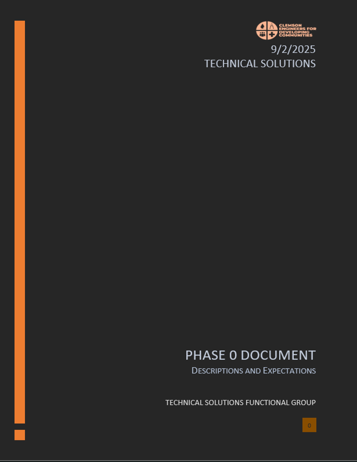
Charter cover page.
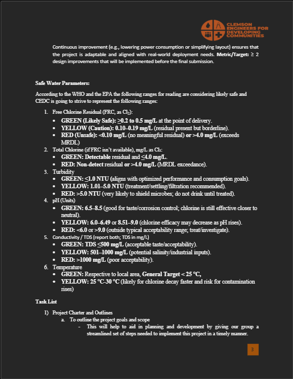
Charter excerpt.
Phase 1 focused on water-quality testing practices, low-cost sensing options, deployment constraints, and what a practical early-warning system should measure. This phase narrowed the project around trend detection, contamination indicators, and monitoring points where problems could emerge after treatment.
The literature review helped anchor later decisions around target parameters, project scope, and what level of hardware and software complexity would be realistic for a CEDC student team to continue.
Primary contributor: Camren Khoury
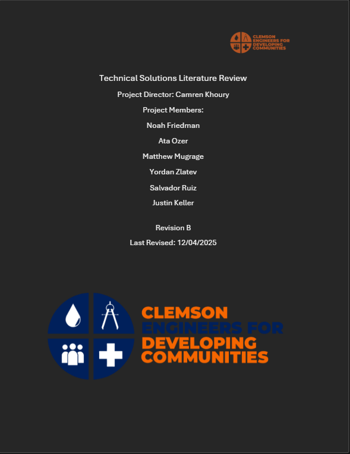
Literature review cover page.
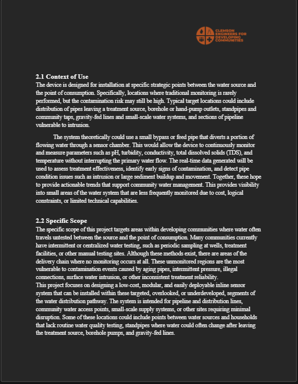
Literature review excerpt.
The Remote Water Sensor side of WQSP focused on defining the physical sensing system. The intended design centered on an ESP32-based sensor node connected to six water-quality measurements: ORP, pH, turbidity, TDS/conductivity, temperature, and flow rate. This part of the project focused on how data would be collected in the field, how the sensors would be organized electrically, and how the hardware could eventually move from bench testing into a more compact deployable form.
The physical-system work included sensor selection, ESP32 integration planning, PCB breakout-board development, power and grounding considerations, and future enclosure planning. The goal was not to certify water as potable from a single reading, but to support early-warning trend detection across multiple parameters over time.
Included design areas: sensor selection, ESP32 integration planning, power and grounding strategy, breakout-board development, optional Raspberry Pi uplink support, and early enclosure planning.
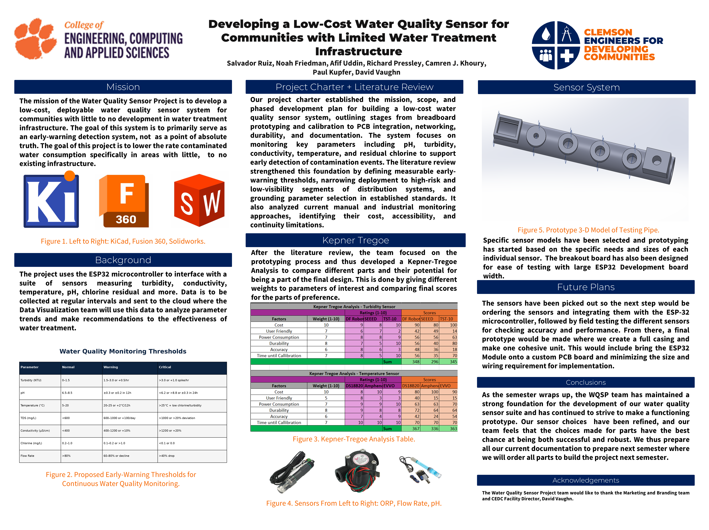
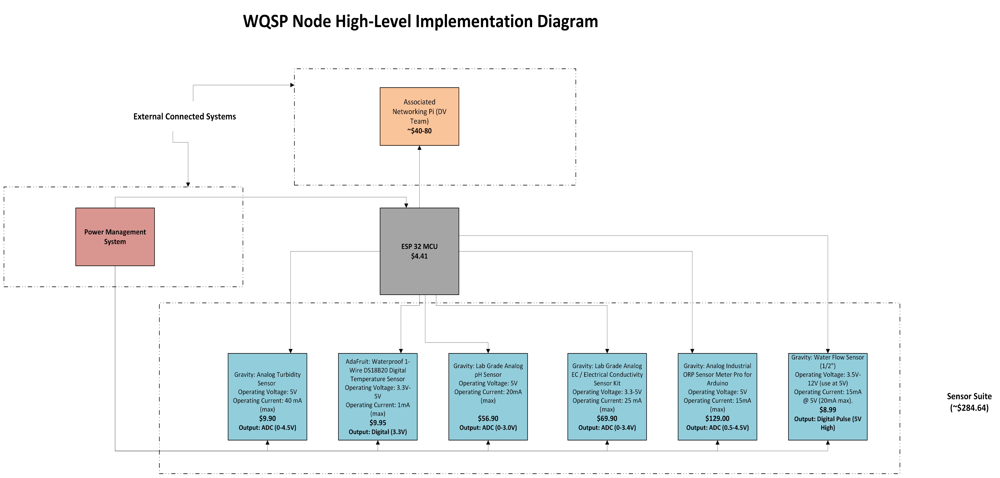

Waterproof DS18B20 digital temperature sensor
Provides environmental context for readings.
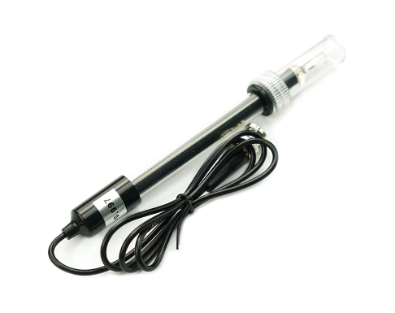
Gravity analog electrical conductivity sensor kit
Tracks dissolved solids and ionic-content trends.
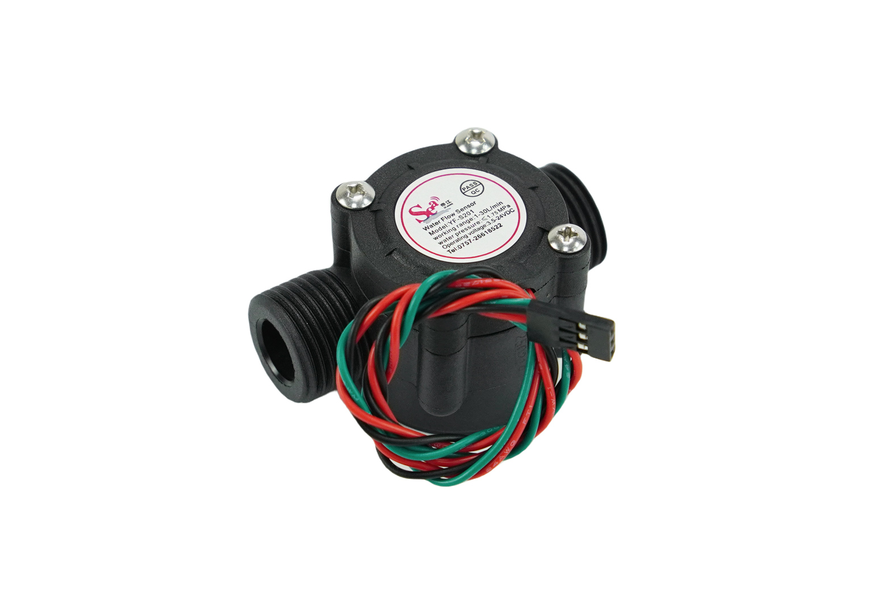
Gravity water flow sensor
Confirms movement through the test path.
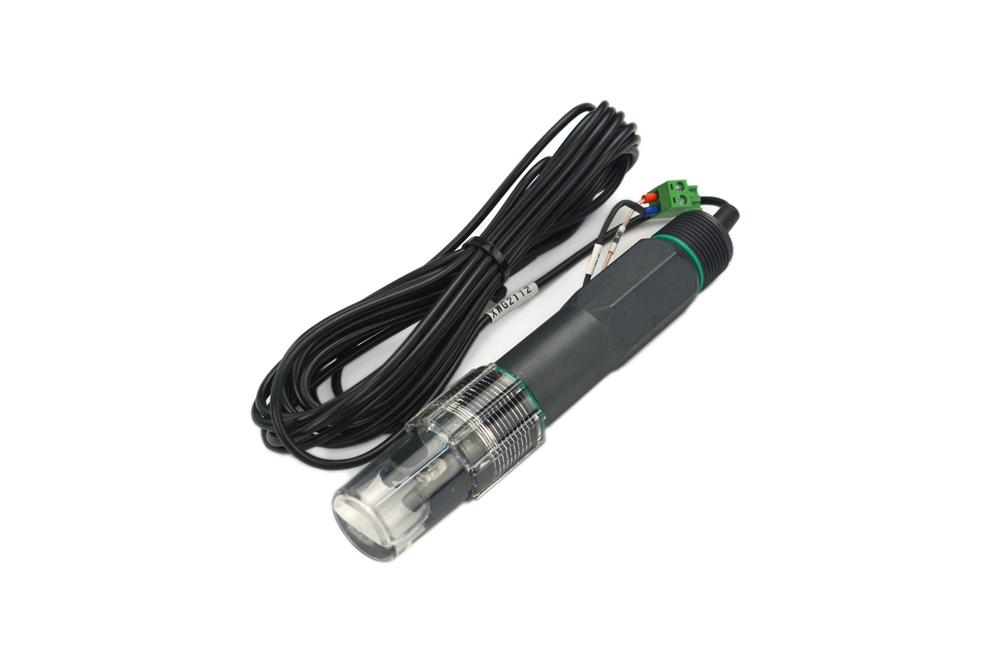
Gravity analog industrial ORP sensor meter pro
Tracks oxidation-reduction behavior.
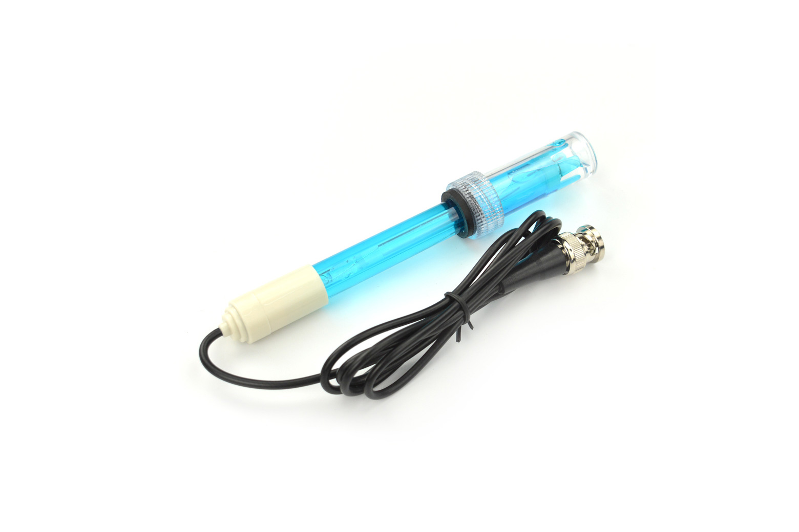
Gravity analog pH sensor kit
Tracks acidity and basicity shifts.
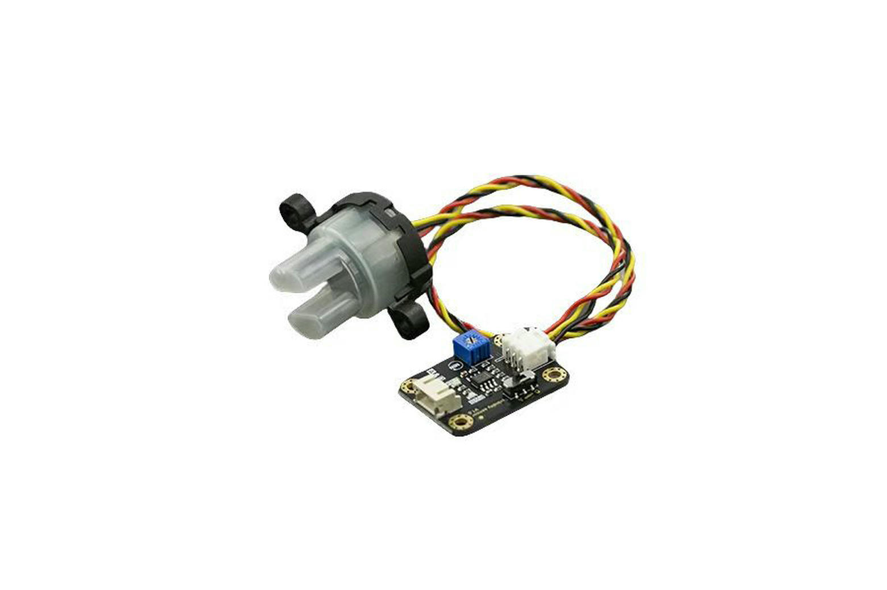
DFRobot analog turbidity sensor
Tracks suspended particles and clarity changes.
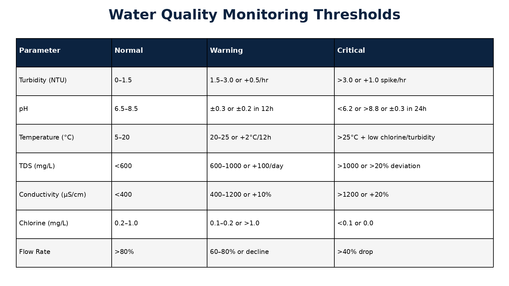
Due to the physical size and pin density of the ESP32 development setup, traditional breadboard development was not practical for organized sensor testing. To address this, a custom ESP32 breakout board was designed to route GPIO pins to accessible female headers, provide common ground distribution, and include dedicated power input connections.
The breakout board was an intermediate testing platform, not the final deployable PCB. The longer-term hardware plan was to integrate the ESP32 module directly onto a custom board with the support circuitry needed for a realistic sensor node. That future revision would include external antenna support for the selected module variant where needed, a UART/programming header, regulated power input, buck conversion, optional linear regulation, sensor connectors, debug/test points, and cleaner power and ground routing.
Limited procurement and resource availability made it difficult to move directly from breakout-board planning into full sensor integration and a consolidated custom PCB. Because of this, the hardware work was structured so future CEDC teams could continue once sensors, PCB components, enclosure materials, and testing resources were available.
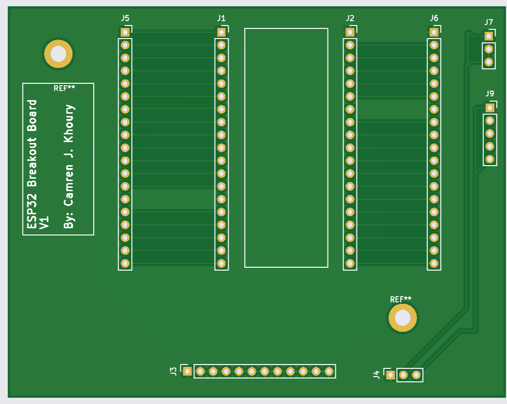
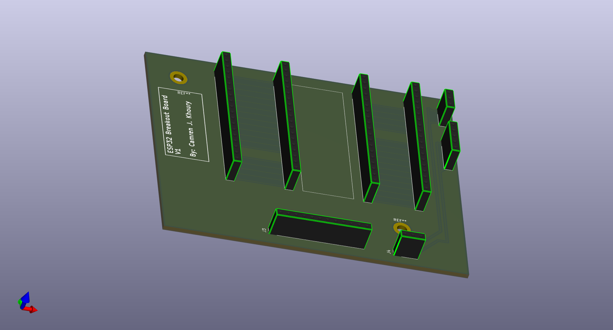
Alongside the physical sensor-node work, the Data Visualization team developed the software and communication side of the system. Since live sensor readings were not available yet, the dashboard used simulated water-quality data to build and test the front-end layout, trend visualization, warning logic, and user interaction flow.
The project also explored a tiered networking model because deployment environments may not have the same internet reliability, power access, or local computing resources. The concept separated deployments into high-, moderate-, and minimal-reliability tiers so the system could adapt to the needs of the community instead of depending on one fixed infrastructure assumption.
Tier 1: High-Reliability Deployment
ESP32 sensor node with Raspberry Pi uplink and support for a full dashboard.
Tier 2: Moderate-Reliability Deployment
ESP32 sensor node with lighter networking requirements.
Tier 3: Minimal-Reliability Deployment
ESP32 sensor node with local display support and reduced internet dependence.
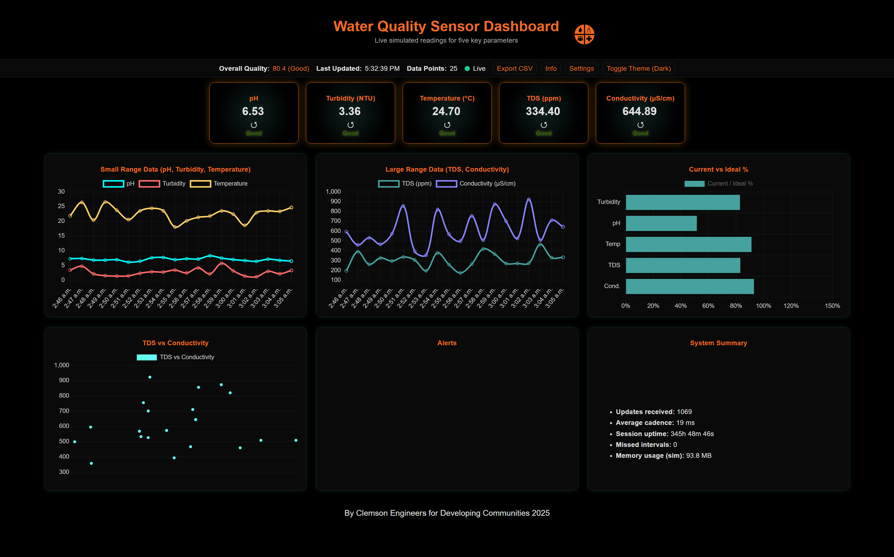
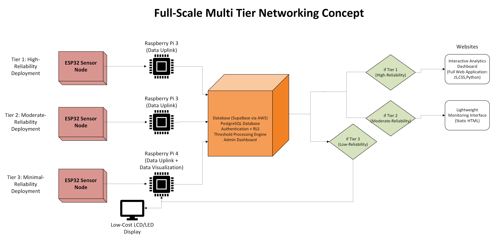
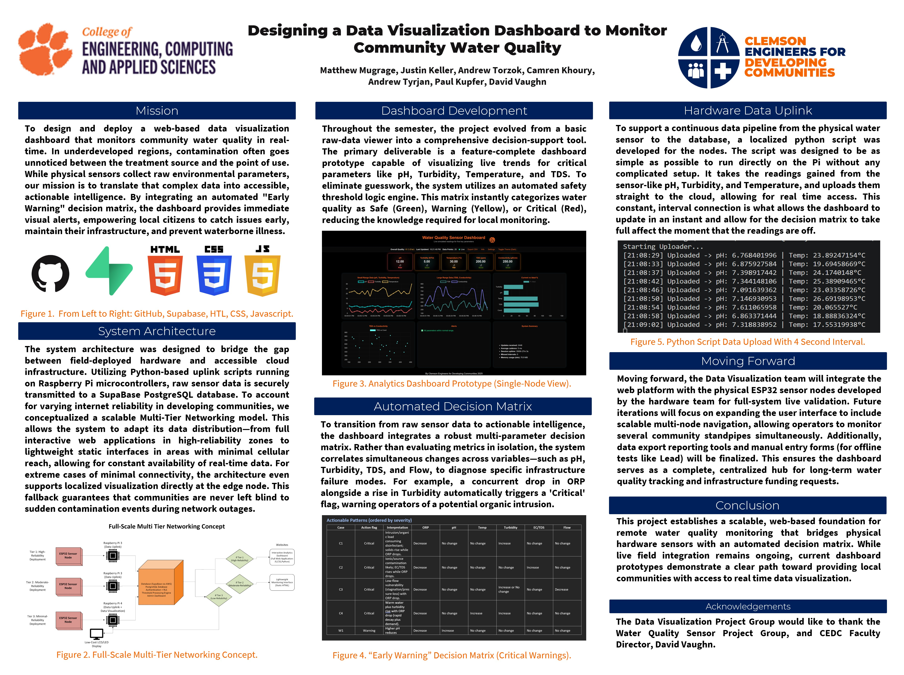
By the end of my time at Clemson, WQSP had not reached a fully validated field-ready prototype due to timeline, funding, procurement, and resource constraints. Physical progress depended on acquiring sensors, power components, PCB materials, enclosure hardware, and testing equipment, which limited how quickly the team could move from architecture and planning into full hardware integration. However, the project established the foundation for a scalable, low-cost remote water-quality monitoring system through project chartering, literature review, early-warning threshold research, sensor selection, ESP32 architecture planning, PCB breakout-board development, dashboard prototyping, cloud/database planning, and continuation documentation.
Future CEDC teams can build from this foundation by integrating and calibrating the selected sensors, consolidating the breakout-board work into a deployable PCB, developing the enclosure, connecting live data to the dashboard, and testing the system in controlled water environments.